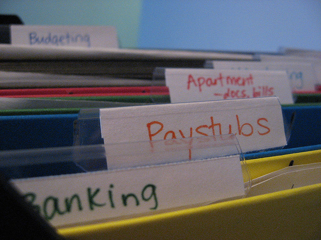

Storage¶
Sometimes you need to store useful information. Such information is stored as data: representation of information (in a digital form when stored on computers). If you store data on a computer it should persist, even if you switch the device off and on again.
Happily MicroPython on the micro:bit allows you to do this with a very simple file system. Because of memory constraints there is approximately 30k of storage available on the file system.
Note
The micropython file system should not be confused with the micro:bit mass storage mode which presents the device as a USB drive. Mass storage mode is only intended for copying across a HEX file, so you won’t see files you create using the file system appearing on the MICROBIT drive.
What is a file system?
It’s a means of storing and organising data in a persistent manner - any data stored in a file system should survive restarts of the device. As the name suggests, data stored on a file system is organised into files.
A computer file is a named digital resource that’s stored on a file system.
Such resources contain useful information as data. This is exactly how a
paper file works. It’s a sort of named container that contains useful
information. Usually, both paper and digital files are named to indicate what
they contain. On computers it is common to end a file with a .something
suffix. Usually, the “something” indicates what type of data is used to
represent the information. For example, .txt indicates a text file,
.jpg a JPEG image and .mp3 sound data encoded as MP3.
Some file systems (such as the one found on your laptop or PC) allow you to organise your files into directories: named containers that group related files and sub-directories together. However, the file system provided by MicroPython is a flat file system. A flat file system does not have directories - all your files are just stored in the same place.
The Python programming language contains easy to use and powerful ways in which to work with a computer’s file system. MicroPython on the micro:bit implements a useful subset of these features to make it easy to read and write files on the device, while also providing consistency with other versions of Python.
Warning
Flashing your micro:bit will DESTROY ALL YOUR DATA since it re-writes all the flash memory used by the device and the file system is stored in the flash memory.
However, if you switch off your device the data will remain intact until you either delete it or re-flash the device.
Open Sesame¶
Reading and writing a file on the file system is achieved by the open
function. Once a file is opened you can do stuff with it until you close it
(analogous with the way we use paper files). It is essential you close a file
so MicroPython knows you’ve finished with it.
The best way to make sure of this is to use the with statement like this:
with open('story.txt') as my_file:
content = my_file.read()
print(content)
The with statement uses the open function to open a file and assign it
to an object. In the example above, the open function opens the file called
story.txt (obviously a text file containing a story of some sort).
The object that’s used to represent the file in the Python code is called
my_file. Subsequently, in the code block indented underneath the with
statement, the my_file object is used to read() the content of the
file and assign it to the content object.
Here’s the important point, the next line containing the print statement
is not indented. The code block associated with the with statement is only
the single line that reads the file. Once the code block associated with the
with statement is closed then Python (and MicroPython) will automatically
close the file for you. This is called context handling and the open
function creates objects that are context handlers for files.
Put simply, the scope of your interaction with a file is defined by the code
block associated with the with statement that opens the file.
Confused?
Don’t be. I’m simply saying your code should look like this:
with open('some_file') as some_object:
# Do stuff with some_object in this block of code
# associated with the with statement.
# When the block is finished then MicroPython
# automatically closes the file for you.
Just like a paper file, a digital file is opened for two reasons: to read its
content (as demonstrated above) or to write something to the file. The default
mode is to read the file. If you want to write to a file you need to tell the
open function in the following way:
with open('hello.txt', 'w') as my_file:
my_file.write("Hello, World!")
Notice the 'w' argument is used to set the my_file object into write
mode. You could also pass an 'r' argument to set the file object to read
mode, but since this is the default, it’s often left off.
Writing data to the file is done with the (you guessed it) write
method that takes the string you want to write to the file as an argument. In
the example above, I write the text “Hello, World!” to a file called
“hello.txt”.
Simple!
Note
When you open a file and write (perhaps several times while the file is in an open state) you will be writing OVER the content of the file if it already exists.
If you want to append data to a file you should first read it, store the content somewhere, close it, append your data to the content and then open it to write again with the revised content.
While this is the case in MicroPython, “normal” Python can open files to write in “append” mode. That we can’t do this on the micro:bit is a result of the simple implementation of the file system.
OS SOS¶
As well as reading and writing files, Python can manipulate them. You certainly need to know what files are on the file system and sometimes you need to delete them too.
On a regular computer, it is the role of the operating system (like Windows,
OSX or Linux) to manage this on Python’s behalf. Such functionality is made
available in Python via a module called os. Since MicroPython is the
operating system we’ve decided to keep the appropriate functions in the os
module for consistency so you’ll know where to find them when you use “regular”
Python on a device like a laptop or Raspberry Pi.
Essentially, you can do three operations related to the file system: list the files, remove a file and ask for the size of a file.
To list the files on your file system use the listdir function. It
returns a list of strings indicating the file names of the files on the file
system:
import os
my_files = os.listdir()
To delete a file use the remove function. It takes a string representing
the file name of the file you want to delete as an argument, like this:
import os
os.remove('filename.txt')
Finally, sometimes it’s useful to know how big a file is before reading from
it. To achieve this use the size function. Like the remove function, it
takes a string representing the file name of the file whose size you want to
know. It returns an integer (whole number) telling you the number of bytes the
file takes up:
import os
file_size = os.size('a_big_file.txt')
It’s all very well having a file system, but what if we want to put or get files on or off the device?
Just use the microfs utility!
File Transfer¶
If you have Python installed on the computer you use to program your BBC
micro:bit then you can use a special utility called microfs (shortened to
ufs when using it in the command line). Full instructions for installing
and using all the features of microfs can be found
in its documentation.
Nevertheless it’s possible to do most of the things you need with just four simple commands:
$ ufs ls
story.txt
The ls sub-command lists the files on the file system (it’s named after
the common Unix command, ls, that serves the same function).
$ ufs get story.txt
The get sub-command gets a file from the connected micro:bit and saves it
into your current location on your computer (it’s named after the get
command that’s part of the common file transfer protocol [FTP] that serves the
same function).
$ ufs rm story.txt
The rm sub-command removes the named file from the file system on the
connected micro:bit (it’s named after the common Unix command, rm, that
serves the same function).
$ ufs put story2.txt
Finally, the put sub-command puts a file from your computer onto the
connected device (it’s named after the put command that’s part of FTP that
serves the same function).
Mainly main.py¶
The file system also has an interesting property: if you just flashed the
MicroPython runtime onto the device then when it starts it’s simply waiting
for something to do. However, if you copy a special file called main.py
onto the file system, upon restarting the device, MicroPython will run the
contents of the main.py file.
Furthermore, if you copy other Python files onto the file system then you can
import them as you would any other Python module. For example, if you had
a hello.py file that contained the following simple code:
def say_hello(name="World"):
return "Hello, {}!".format(name)
…you could import and use the say_hello function like this:
from microbit import display
from hello import say_hello
display.scroll(say_hello())
Of course, it results in the text “Hello, World!” scrolling across the
display. The important point is that such an example is split between two
Python modules and the import statement is used to share code.
Note
If you have flashed a script onto the device in addition to the MicroPython
runtime, then MicroPython will ignore main.py and run your embedded
script instead.
To flash just the MicroPython runtime, simply make sure the script you
may have written in your editor has zero characters in it. Once flashed
you’ll be able to copy over a main.py file.